Play-based learning
Children learn through stories, movement, building, pretend play, and guided discovery.
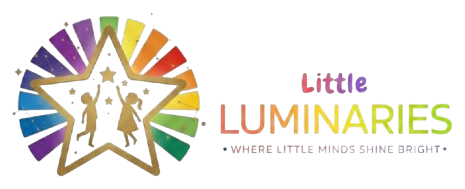
Little Luminaries Preschool and Activity CenterBright beginnings
Little Luminaries is a warm preschool and activity center where children build confidence through sensory play, creativity, movement, stories, and caring teacher guidance.
Children learn through stories, movement, building, pretend play, and guided discovery.
Hands-on materials, textures, art, messy play, and real experiences support early thinking.
Gentle routines and caring adults help children feel safe, secure, and ready to participate.
Thoughtful spaces for movement, creativity, communication, independence, and joyful growth.
About Us
At Little Luminaries, we believe childhood should be joyful, creative, and filled with meaningful exploration. Our thoughtfully designed environment encourages children to learn naturally through play, movement, sensory experiences, creativity, and connection.
We focus on creating a space where every child feels secure, valued, confident, and excited to discover the world around them.
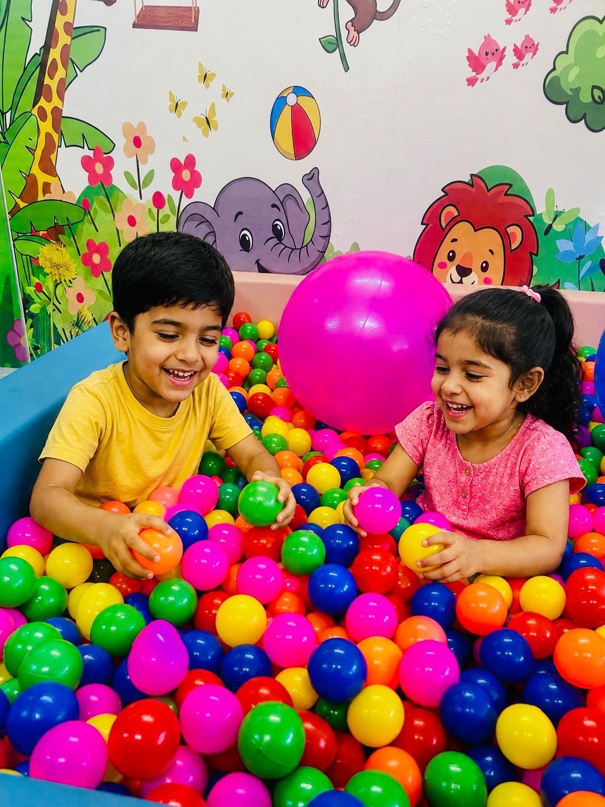
Why Parents Choose Us
Children learn best through hands-on experiences, exploration, movement, creativity, and meaningful play.
We create a safe and welcoming space where children feel emotionally secure, happy, and comfortable.
Our passionate educators are ECCEd-certified and dedicated to guiding every child with care, patience, and understanding.
We encourage social, emotional, creative, cognitive, and physical development through everyday learning experiences.
Our Approach
At Little Luminaries, learning goes beyond the classroom. Through sensory exploration, creative expression, interactive activities, storytelling, movement, music, and hands-on experiences, we nurture curiosity, confidence, independence, and a genuine love for learning.
We believe every child learns differently, and our environment is designed to support each child's individual pace, personality, and potential.
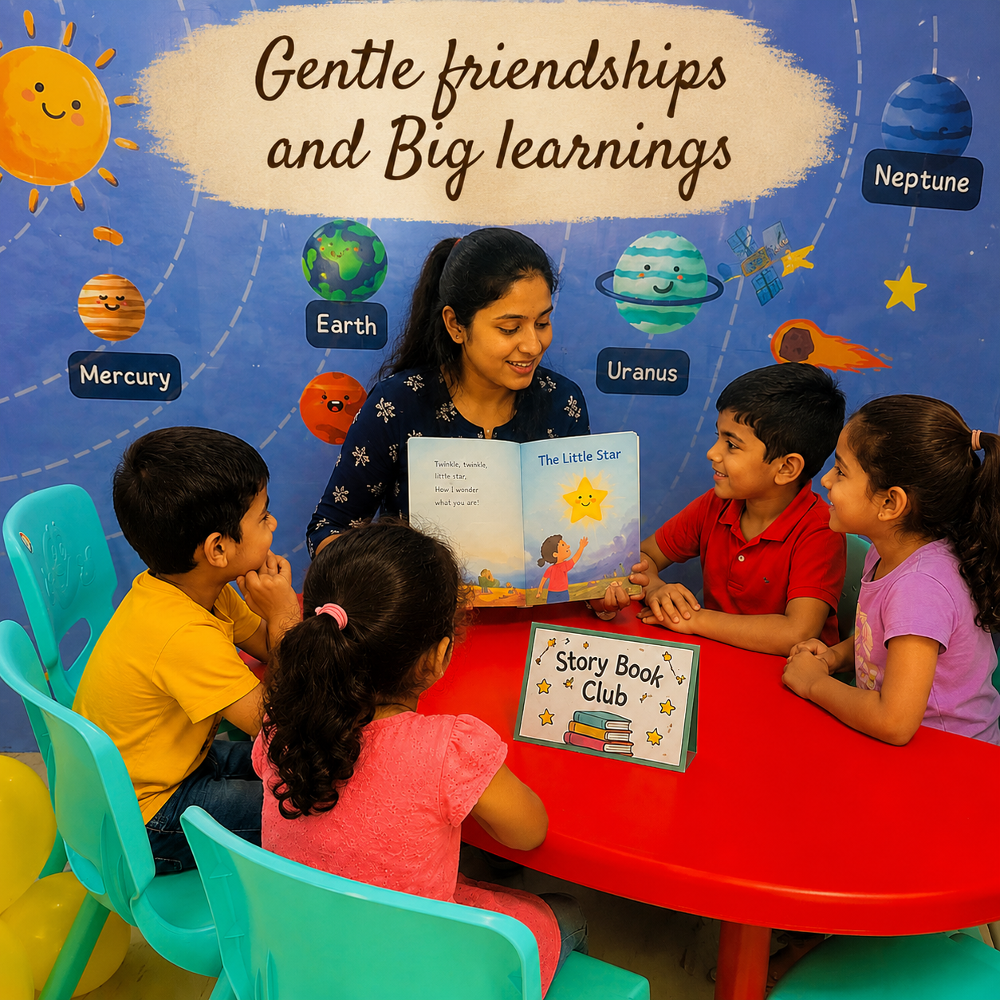
Programs
Each stage is designed around joyful experiences, steady routines, caring guidance, and age-appropriate independence.
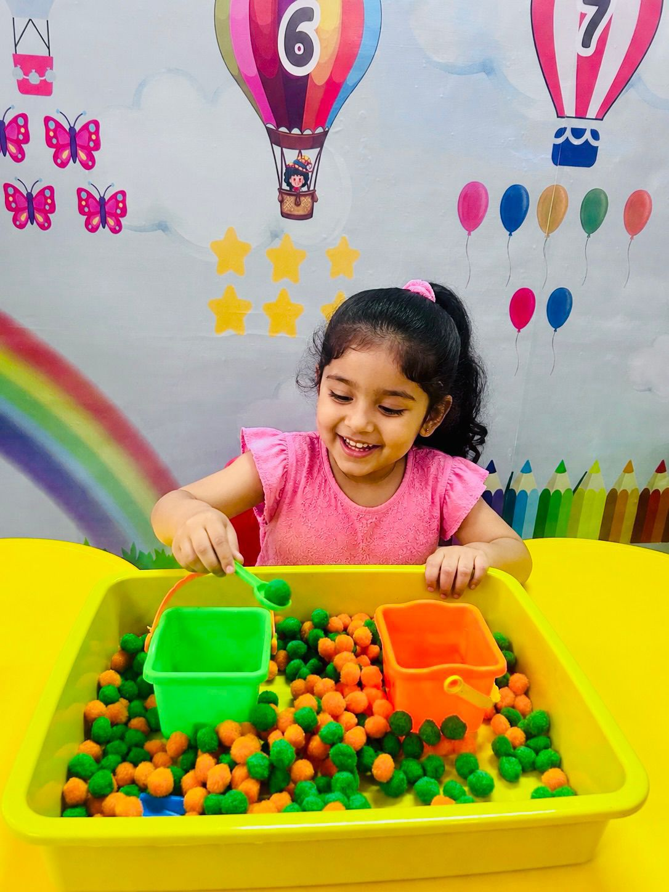
A playful bonding experience designed to encourage sensory exploration, movement, early interaction, and joyful learning experiences.
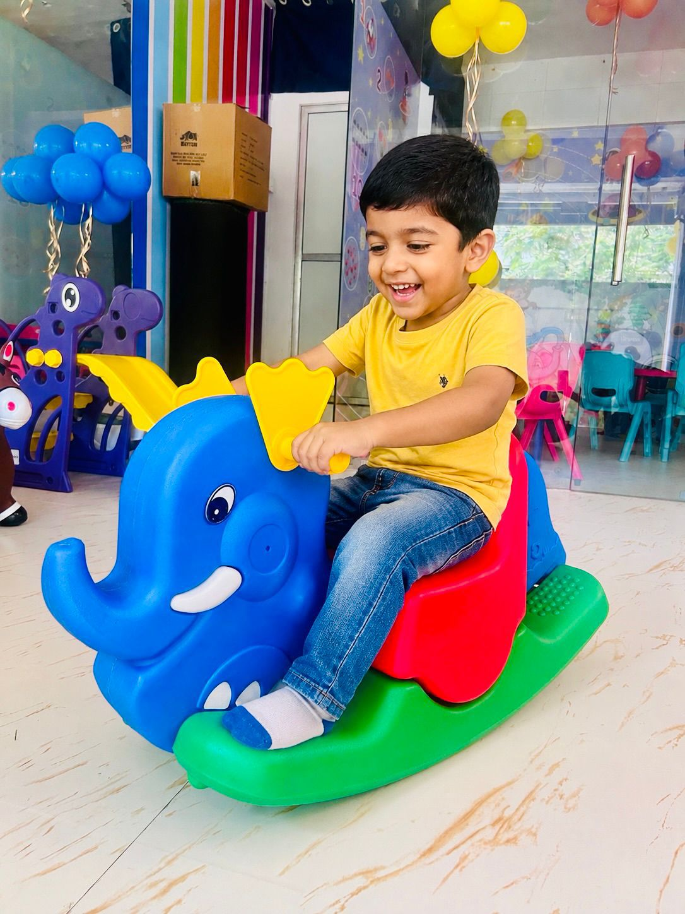
A gentle introduction to structured learning through stories, music, art, play, and hands-on exploration.
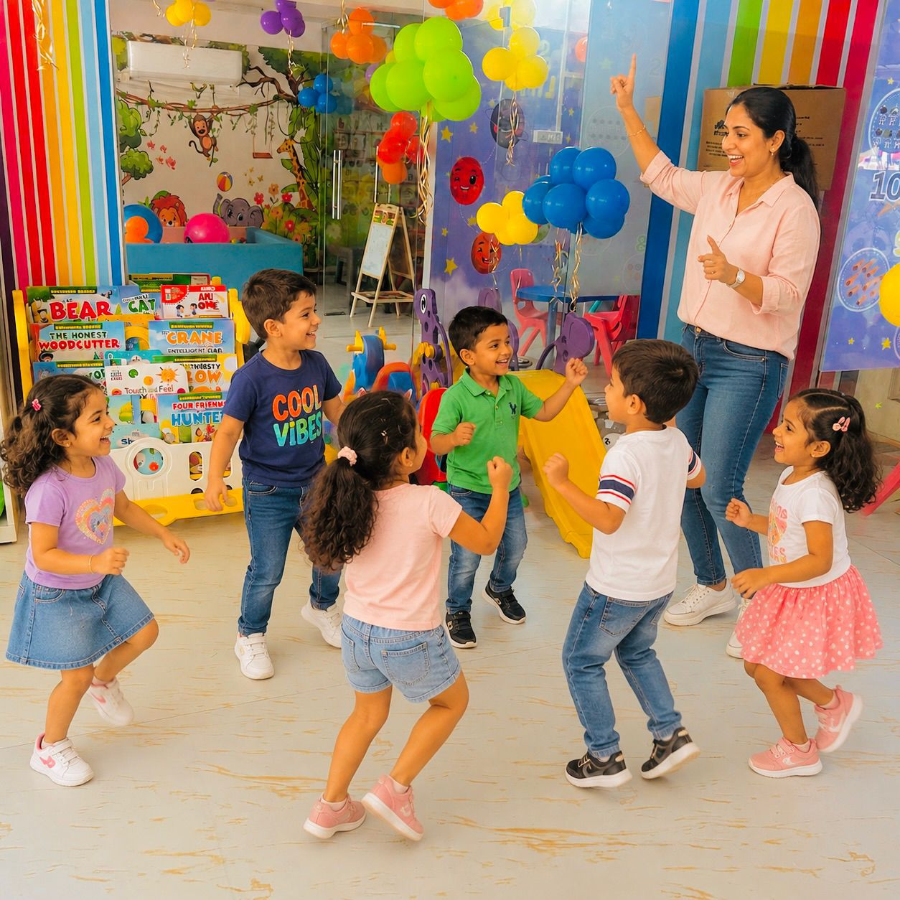
Interactive learning experiences that nurture creativity, communication, confidence, independence, and curiosity.
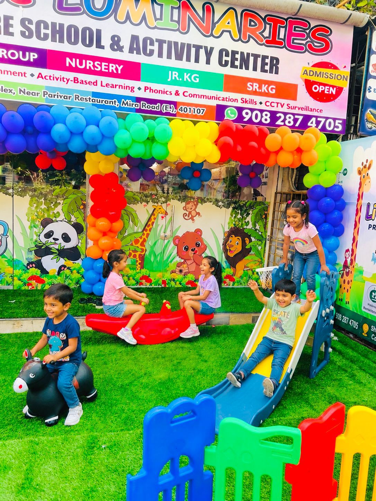
Interactive and play-based learning experiences that encourage communication, creativity, social development, early literacy, numeracy, and independent thinking.
A well-balanced learning environment that strengthens confidence, problem-solving, creativity, language development, and school readiness through engaging hands-on experiences.
Moments at Little Luminaries
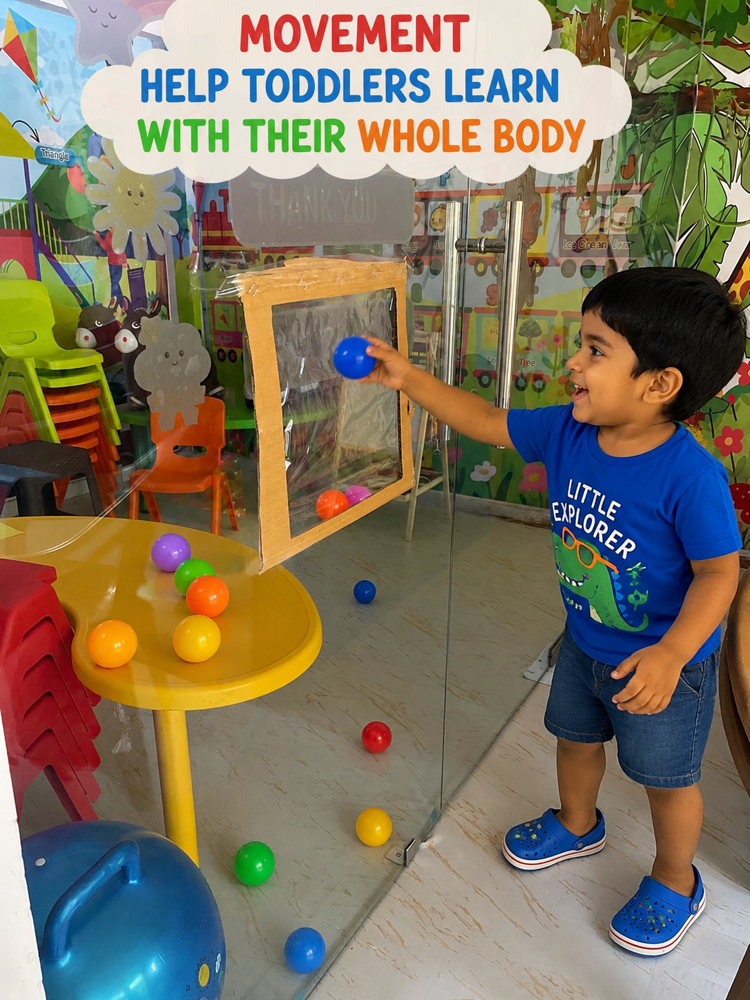
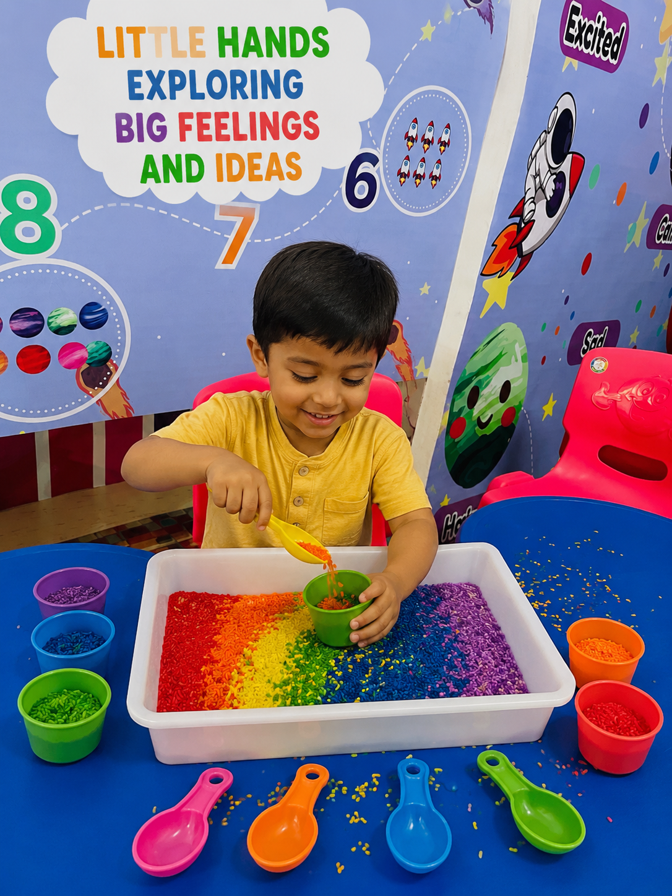
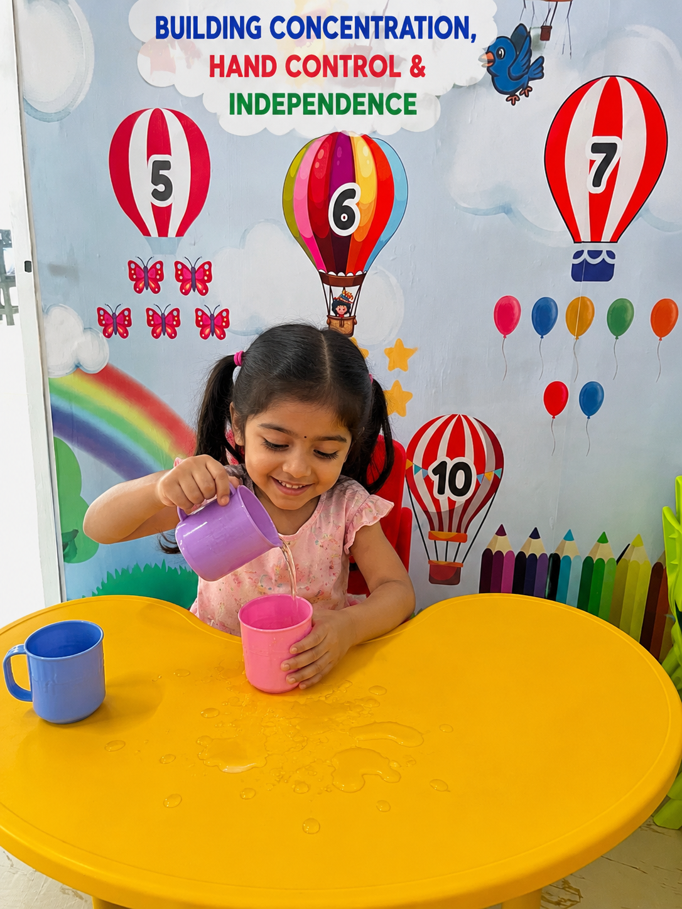
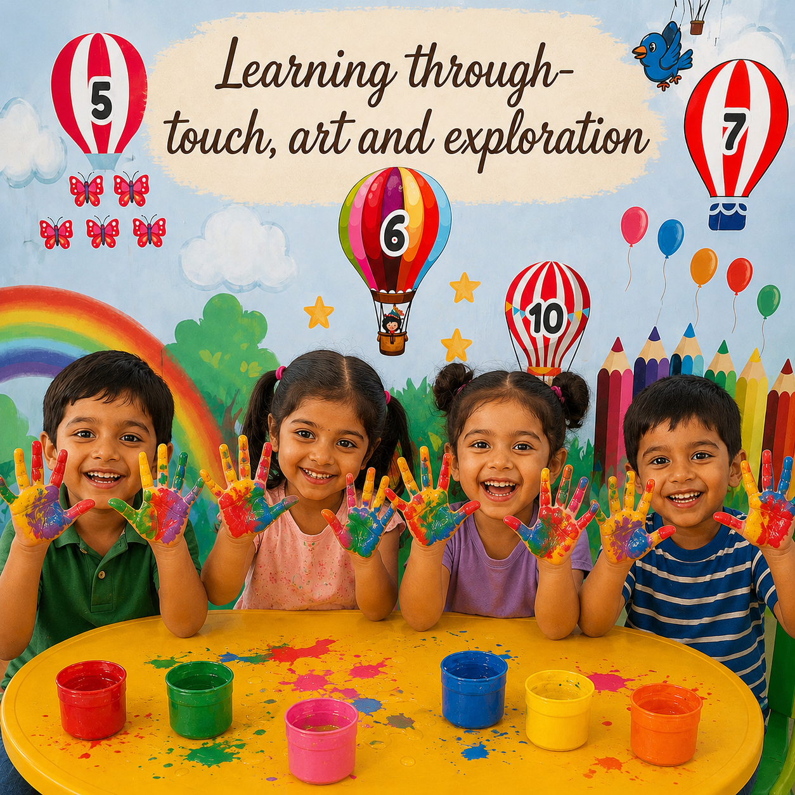
Begin the journey
Contact
Book a visit to explore our space, meet our educators, and experience our joyful learning environment.
Phone Number9082874705
Instagram@thelittleluminariespreschool
AddressShop no 1&2, H1 building, Poonam Sagar Complex, Near Parivaar restaurant, Mira road east, 401107
HoursOpen until 9:30 PM